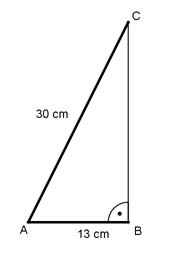

Aufgabe 311 Auf einen Kegel mit einem Grundkreisdurchmesser von 26 cm und einer Mantellinie von 30 cm ist eine Halbkugel aufgesetzt. Wie groß sind das Volumen V und die Oberfläche O des Körpers? Volumen = Kegel + Halbkugel л * r² * h л * d³ V = ------------ + --------- 3 12 r = d/2 = 26 cm/2 = 13 cm  Satz von Pythagoras im Dreieck ABC: AC² = AB² + BC² |-AB² BC² = AC² - AB² = 30² cm² - 13² cm² = 731 cm² |√ BC = 27 cm = h л * 13² cm² * 27 cm л * 26³ cm³ V = ----------------------- + --------------- 3 12 V = 4 776 cm³ + 4 599 cm³ = 9 375 cm³ Oberfläche = Kegelmantel + Halbkugeloberfläche d² * л O = л * r * s + --------- 2 26² cm² * л O = л * 13 cm * 30 cm + --------------- 2 O = 1 225 cm² + 1 061 cm² = 2 286 cm²